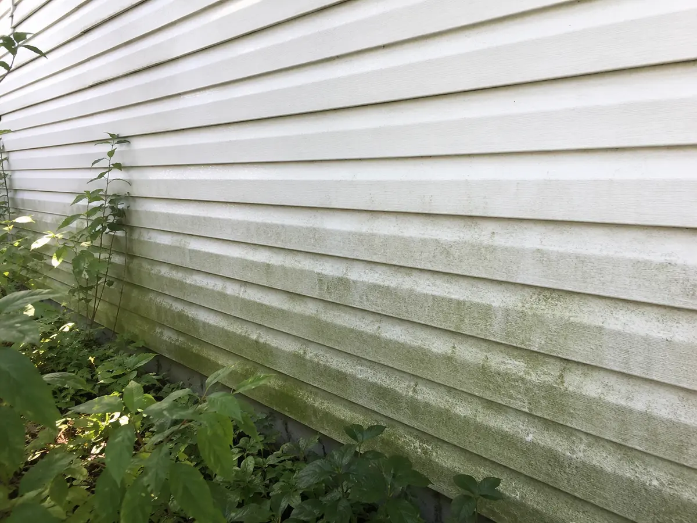
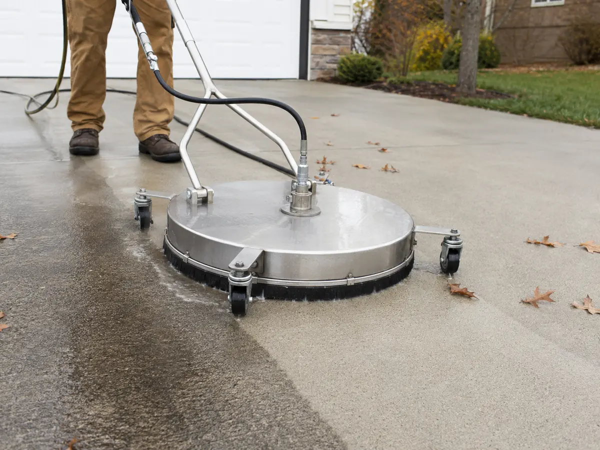

Mid-Missouri weather puts home exteriors through a constant cycle of pollen, dust, humidity, algae growth, fallen leaves, storms, and winter grime. Over time, that buildup can discolor siding, make concrete slippery, stain outdoor surfaces, and drag down your home’s curb appeal.
Regular exterior cleaning helps keep those surfaces looking better and prevents organic growth and stains from becoming more difficult to remove. For most homes in Mexico, Missouri, and the broader Mid-Missouri region, the best window for professional exterior cleaning runs from spring through early fall. The right timing depends on the surface, the type of buildup, and the weather before and after the job.
Spring House Washing: Removing Winter Grime
Winter can leave siding, concrete, decks, patios, and walkways covered in dirt, road residue, moisture stains, and organic buildup. Spring also brings heavy pollen that quickly settles on siding, windows, vehicles, porches, and outdoor furniture.
A professional spring house wash can refresh vinyl siding and trim, driveways, walkways, decks, patios, fences, retaining walls, porches, garages, and outbuildings before outdoor projects and summer gatherings begin.
Should You Wait Until Pollen Season Is Over?
Cleaning too early may allow fresh pollen to settle on the home shortly afterward. Homeowners who want the result to last longer may benefit from waiting until the heaviest pollen drop has passed. Visible algae or heavy winter buildup can still justify cleaning earlier.

Summer Exterior Cleaning: Removing Algae and Organic Growth
Summer’s longer daylight hours and warmer temperatures make exterior cleaning convenient. Mid-Missouri humidity, shade, and moisture also create favorable conditions for organic growth on north-facing siding, areas beneath trees, retaining walls, concrete near downspouts, patios, and damp walkways.
Detergents should not be allowed to dry on siding, windows, or painted surfaces. During very hot weather, early morning or late afternoon appointments are often more manageable because surfaces remain cooler and cleaning solutions have enough dwell time.
Fall Pressure Washing: Preparing for Winter
Fall is another excellent cleaning window. Removing algae, dirt, damp leaf residue, and surface stains before freezing weather arrives can improve curb appeal and reduce slippery conditions around driveways, walkways, patios, porches, exterior steps, siding, and shaded areas.
Wet leaves should be removed before washing. Leaf piles can block drainage, trap moisture, and leave dark tannin stains on porous surfaces. Fall cleaning can also expose cracked concrete, loose trim, damaged caulking, and drainage problems before cold weather complicates repairs.

Can You Pressure Wash a House During Winter?
Exterior cleaning may be possible during mild winter weather, but freezing temperatures create additional risks. Water left in concrete cracks, masonry, hoses, equipment, or shaded areas can freeze, while runoff can create dangerous ice on driveways, roads, steps, and walkways.
Winter work should only be considered when temperatures are safely above freezing, surfaces are not frozen, runoff can drain properly, temperatures will remain above freezing afterward, and wind allows cleaning solutions to be controlled safely.
How Often Should You Wash Your Home?
Many Mid-Missouri homes benefit from professional house washing every one to two years. Homes surrounded by mature trees, heavily shaded, located near gravel roads or farmland, exposed to heavy pollen, or experiencing recurring organic growth may need more frequent attention.
Warning signs include green growth on siding, dark stains around gutters or downspouts, heavy pollen, cobwebs around trim and soffits, slippery concrete, dark patios, and recurring buildup in shaded areas.
Choosing the Right Cleaning Method
Different exterior surfaces require different methods. Excessive pressure can damage siding, wood, paint, mortar, seals, and other materials.
Soft Washing
Soft washing uses low pressure and cleaning solutions to loosen algae, dirt, and organic growth. It is commonly used on vinyl or painted siding, trim, soffits, fascia, some fences, and other delicate surfaces. The solution performs most of the cleaning without relying on damaging pressure.
Concrete and Hard-Surface Cleaning
Sound concrete can usually tolerate more pressure than siding. The correct process depends on the concrete’s age and condition, cracks, stain type, drainage, landscaping, and existing sealers or coatings. Oil, rust, leaf stains, tire marks, and organic growth may require different treatments, and deeply absorbed stains may not disappear completely.
Why Professional Exterior Cleaning Matters
Before beginning, a professional should evaluate the surface material and condition, contamination, landscaping, electrical fixtures, windows, doors, seals, runoff paths, weather, pressure, and detergent strength. Properly matched professional equipment can also provide more consistent cleaning on large driveways, tall siding, heavily stained concrete, and widespread organic growth.
Professional Pressure Washing in Mexico, Missouri
G&S Exterior Restoration provides house and siding washing, driveway, sidewalk, patio, porch, deck, fence, and related exterior cleaning services.
Call or text 314-467-0332 to request a free estimate, or visit gsrestoration.net.